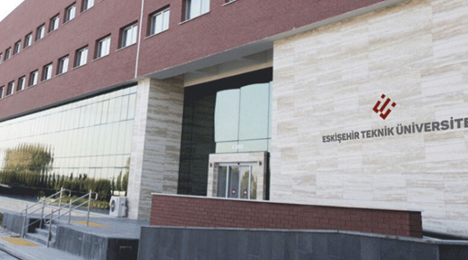

Eskişehir Teknik Üniversitesi
Eskişehir Teknik Üniversitesi
Eskişehir Teknik Üniversitesi ya da kısaca ESTÜ, Türkiye'deki bir devlet üniversitesidir. 18 Mayıs 2018 tarihinde Anadolu Üniversitesine ait çeşitli eğitim birimlerinin aktarılmasıyla iki farklı yerleşkede beş fakülte, üç enstitü ve iki meslek yüksekokulu ile Eskişehir'de eğitim vermeye başlamıştır.
